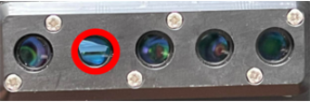
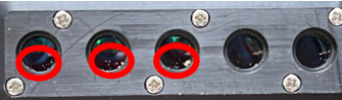

Real-Time Fluorometer (RTF) - Cleaning Panther RTFs
Purpose
The following procedure provides instruction on Cleaning Panther Real-Time Fluorometers.
Parts & Materials
-
Lint Free Wipes (From Thermocycler cleaning kit)
-
Thermocycler Cleaning Swabs (From Thermocycler cleaning kit)
-
Fiber Optic Cleaning Solution (From Thermocycler cleaning kit)
Procedure
- Identify the failing RTF(s) from the RTF Verifier’s output screen.
RTF 1 FAM RTF 2 RED677 RTF 3 HEX RTF 5 ROX - Remove the Amp Incubator’s shield (beneath the incubator).
- Without removing the Amp Incubator, carefully remove the RTF from the instrument (from underneath) so that you do not dislodge any dirt or debris, then inspect the RTF. Remove each RTF, one at a time. Avoid flipping the RTF over, so that any debris present will remain in place.
- Inspect each lens for debris on each channel of the RTF.
Note: The images below display examples of debris on the RTF Lens.
Glove debris:
Dust debris:
- If debris is present, carefully remove it using the cleaning tips and cleaning solution from the Thermocycler cleaning kit.
- If no debris is present, carefully shake the fluorometer and listen for any rattling noises.
- Reinstall the fluorometer following the procedure in Real-Time Fluorometer (RTF) Installation then re-run RTF Verifier to confirm errors are resolved.
- If any errors persist, contact your local support (EU) or USTSESupport (non-EU) representative for additional guidance.
 button at the top of the page to send feedback, comments, or change requests.
button at the top of the page to send feedback, comments, or change requests.